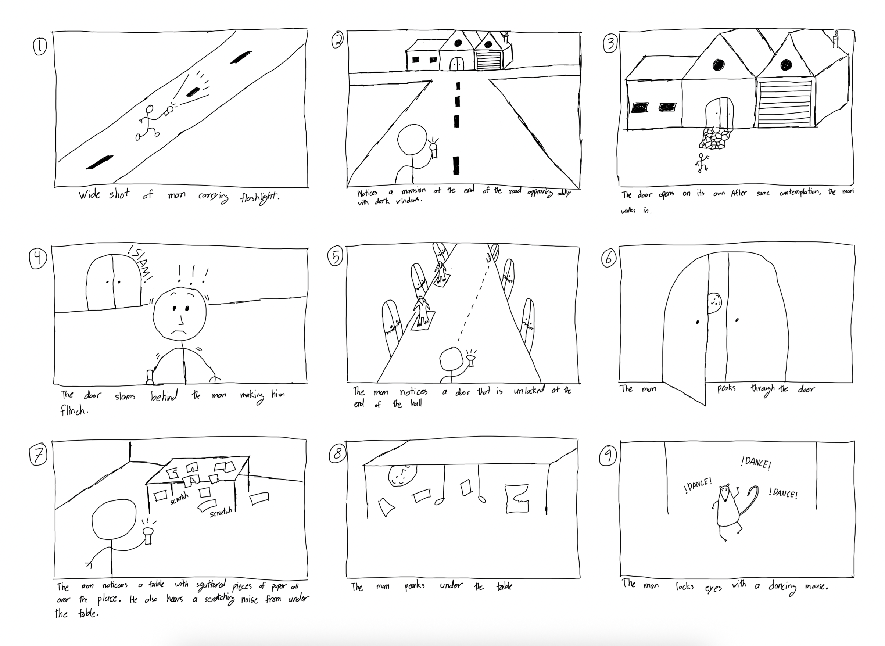

StoryBoard
Concept Storyboard
Storyboard Audio Panels
Panel 1

Panel 2

Panel 3

Panel 4

Panel 5

Panel 6

Panel 7

Panel 8

Panel 9

This animation follows a lone, unnamed man moving through a
unsettling environment that feels empty. The character is kept
visually simple and almost anonymous, shifting the focus to his
surroundings. He is holding a small flashlight, which becomes both
a tool and a storytelling device, controlling what the viewer can
and cannot see. The environments exaggerate scale and distance,
especially the long, empty road and the looming mansion at the
end, creating a sense of isolation and unease. The mansion itself
is jagged and asymmetrical, with dark windows and an imposing door
that feels more alive than the man approaching it.
Inside the mansion, the environment shifts to a narrow corridor
filled with locked doors and stone statues. These elements are
designed to suggest restraint and something being contained, even
though nothing directly threatens the character. The flickering
lights and repetitive hallway layout build tension through
anticipation then action. One unlocked door becomes the visual and
narrative focal point, standing out through warm light and
contrast against the cold surroundings. This environmental cue
motivates the character forward and signals a shift from fear
toward curiosity.
The final room breaks the established tension. The abandoned
office is cluttered but scattered papers, a desk, and dust in the
air, grounds the scene in realism. The scratching sound under the
desk initially suggests danger, but the reveal of a small dancing
mouse changes expectations. This contrast between horror setup and
playful payoff turns suspense into humor. The mouse’s dance acts
as a release of built-up tension, ending the animation on an
ironic note that highlights how atmosphere and expectation can be
more powerful than actual threats.